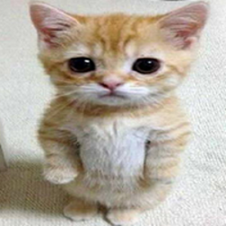
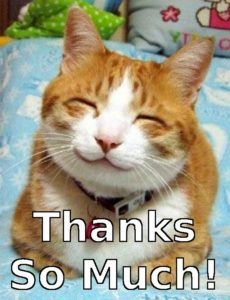

I'm Andrii, a frontend developer with a desire to develop in this sphere and become a qualified specialist. I have excellent communication skills and easily adapt to a new team, also well-developed skills of analytics and problem-solving. I have a lot of projects behind me that were developed from start to finish using different technologies. Some of them were created in a team of several developers. So I am constantly learning new techniques and practicing them as much as possible.
Skills
Technologies: HTML5, CSS3, SCSS/SASS, React, Redux Toolkit, JSON, ES6+, Bootstrap, NodeJS, Express, SQL
Tools: WebStorm, Git, GitHub, ESLint, Figma, Postman
Soft skills: Communication skills, Problem solving, Continuous Learning, Team Collaboration, Quick Adaptation, Stress Tolerance, Self-Learning
Experience
ApStation
ApStation Zero
- Frontend Development
- API Integration
- Interaction with Aptos blockchain
- Connecting crypto wallets
- Cooperate with designer and backend
- Create interfaces for typing the received data
Pet project
Extrem sports
- Frontend Development
- Backend Architecture
- API Integration
- JWT-authentication
- Password hashing, authorization checking
- GCP to store user avatars and events images
- Roles: coach and athlete
- Maintain a personal blog and list of training sessions
- Leave comments for coaches and rate them
- Sorting and filtering users and events lists
- Adaptability of each page
- Handling and visualization errors
Education
Kharkiv National University of Radio Electronics
Bachalor degree. Computer Science, software engineering
Front-End Self-Paced Online Program
Epam Learning
Languages
English - intermediate
Ukrainian - native
Timeline
-
Will I be a programmer??! 😓 → 😀 - May 2019 ▼Hello! Glad to see, I'm pleased that you are here, because this is where my journey in IT began 😊 During Covid, when I was in 10th grade, I thought for a long time about who I would like to become, which made me feel morally bad 😓 My eye fell on programming, namely the front-end part, because I liked to see beautiful sites. While studying it, I began to feel better and realized that I wanted to devote myself to this field. I had to stop studying a bit due to exams :(
-
First experience of working in a team 😔 → 😊 - May 2022 ▼Hello again, let's move on to my first projects 😊 6 people participated in this project. I was the only one who knew how to work with the front-end and a little with the back-end and took on the role of team lead. When distributing tasks, some guys did not want to complete the tasks or completed them for a very long time and we always had to remind them (I looked like this - ). In the end, I did most of the work and I can say that it greatly improved my skills. I felt like a superhero heh 🧙 and was happy like this cat, Meow !You can also see what the project looked like - Super project 😉
-
First complex project 😦 → 😎 - Dec 2023 ▼Wow, good to see you again!!! I hope you liked the previous story 🙂 My first big project made using more modern technologies. Having created a large function, I was at a loss as to how I would do it (My honest reaction - ). I worked hard on it and spent a lot of time making it as good as possible. There were many difficulties that I overcame and learned many techniques! I was proud of myself after doing this project. 🙃You can also see what the project looked like on github - Biggest project 😱

-
My first startup 🤔 → 😠 → 😤 - Feb 2024 ▼I appreciate you getting to this story! 😉 After calling a few old friends, one of them invited me to participate in the event. I was hesitant, as I knew the basis of one of the technologies they wanted to use, but agreed. Unfortunately, the guys procrastinated on completing the tasks, which made me a little angry 😐. I was glad that I used new technologies and added to my stack. After a while, we finished the project and I was able to breathe. 😅 You can also see what the project looked like - CRYPTOOO 😱
-
My first interview 😬 → 😔 → 😃 - March 2024 ▼AAAAAH, you have reached the extremely important event for me. 😍  I was worried before the conversation even with the recruiter 😧, but I successfully passed it and was incredibly happy!!! I had 4 days to prepare for the technical interview. All this time I prepared diligently, but unfortunately I was refused. 🤧 But I didn’t give up too much and started looking for advantages, such as new experience, new features heard from experienced developers, and how work works in a real project. 🙂